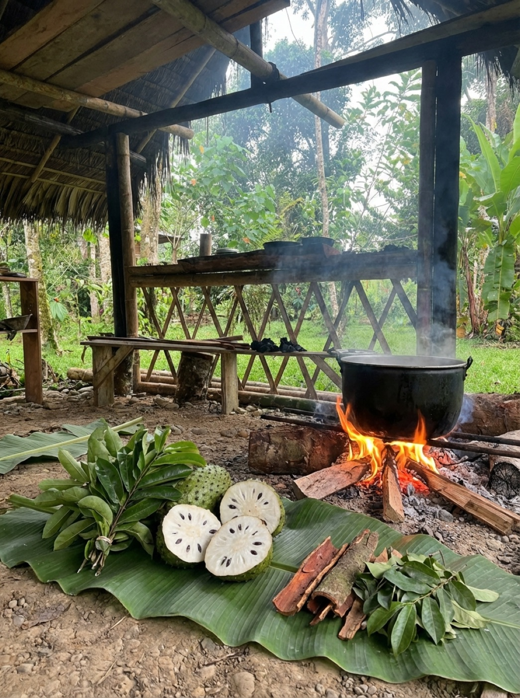

Oxindole Alkaloids
Immunity
The compound responsible for regulating your white blood cell activity and calming chronic immune overactivity.
 Wild Harvested
Wild Harvested
Kawsaypac Ancestral Herbs
Relief for the pain & cellular repair
Harness the power of one of the most scientifically studied Amazonian herbs. This wild-harvested bark, traditionally known as the "life-giving vine," has been used for generations by indigenous communities to ease inflammation, support immune balance, and aid deep internal restoration. A 2024 review in Frontiers in Pharmacology confirms what the Amazon has always known.
Free US shipping on orders over $50. Ships within 48 hours from our herb room.
Bring 1 1/2 cups of water to a boil. Add 1 heaping teaspoon of bark. Reduce to low, cover, and simmer for 30 minutes. Strain and drink warm. Best taken 1 hour before or after meals, ideally before bed.
 Pairs well with
Eliminate & Regenerate Kit
The full-system cleanse Cat's Claw belongs to
Pairs well with
Eliminate & Regenerate Kit
The full-system cleanse Cat's Claw belongs to

Why Cat's Claw
Active Compounds
Every cup carries a precise blend of plant compounds, each one targeting a different part of your healing.
Immunity
The compound responsible for regulating your white blood cell activity and calming chronic immune overactivity.
Anti-inflammatory
Targets the inflammation causing your joint pain and swelling, right at the source.
Antioxidant
Neutralizes free radicals and shields healthy cells from oxidative stress and damage, so your body can focus on healing instead of defending.
Repair
Your gut and brain protector. Supports DNA repair, reduces neuroinflammation, and has shown neuroprotective effects in brain tissue research.
Protection
Gives your cells an extra layer of defense against daily environmental stress.
Ritual
The Big Batch
Prep every few days
Makes roughly 4 cups.
The Daily Cup
One cup, one ritual
Best taken 1 hour before or after meals.
Timing
Drink 1 hour before breakfast. On an empty stomach, the alkaloids absorb faster and go deeper.
Take as your last drink before bed. Cat's Claw does its deepest repair work while your body is at rest.
This is Step 1. Start here before moving to heavy metals or parasites. The colon has to be clear for everything else to move.
From Our Customers
"My arthritis pain reduced in two weeks."
"I had chronic gut inflammation for years. Cat's Claw was the first thing that actually helped."
"I started sleeping through the night. No more joint stiffness waking me up."
Evidence
A 2024 systematic review and meta-analysis in Frontiers in Pharmacology confirmed that Cat's Claw has been used by Amazonian indigenous groups to treat inflammatory diseases, with studies validating its anti-inflammatory and immunomodulatory effects across multiple disease models.
Read the studyCat's Claw extract was superior to placebo in 50 patients with rheumatoid arthritis, reducing the number of painful joints and morning stiffness.
Read the studyIn a study of 40 breast cancer patients undergoing chemotherapy, 300mg Cat's Claw extract prevented a decrease in white blood cells and repaired DNA damage.
Read the studyA clinical trial of 45 osteoarthritis patients found Cat's Claw to be an effective treatment for knee osteoarthritis, with anti-inflammatory properties linked to TNF-alpha inhibition.
Read the studyThe Difference
| What matters | Kawsaypac | Health store capsules |
|---|---|---|
| The plant | 100% wild-harvested whole bark | Ground powder, processed in facilities |
| Extraction | 30-minute simmer draws out the full spectrum of alkaloids | Skips the extraction process entirely |
| Fillers | No fillers, no capsules, no shortcuts | Fillers, flow agents and capsule shells |
| Sourcing | Direct trade with indigenous Ecuadorian families | Anonymous supply chains and warehouses |
What To Expect
The first 14 days
You'll notice less bloating, less discomfort. Customers notice a calming effect on digestion within the first week.
You'll wake up without that first painful stretch. Many customers claim to wake up with less morning stiffness.
After 2 weeks
The ache you've carried for years starts to fade. Swelling goes down, and for the first time in a long time, your joints aren't the first thing you notice when you wake up.
You'll move through your day with ease. Many customers describe a deep sense of internal cleansing and renewed vitality.
The Secret For Best Results
These herbs are powerful. But they work best when your body is ready to receive them. Our herbs are not a substitute for how you live. It is an amplifier of it. The more you support your body through what you eat, how you move, and how you rest, the deeper this plant can go. These plants have carried generations. Meet them halfway and they will carry you further than you expect.
Reduce processed foods, refined sugars, and alcohol. These are the same things driving the inflammation, hormonal disruption, digestive stress, and immune suppression your herbs are working to address. You cannot pour medicine into a body that keeps creating the conditions for disease.
Gentle, consistent movement keeps your lymphatic system flowing, your digestion active, and your body circulating the plant compounds you are taking in. You do not need intense exercise. A 30-minute walk daily does more for your body than most people realize.
Most healing happens while you sleep. Your herbs work with your body's natural repair cycles, but those cycles require deep, consistent rest to activate. Prioritize 7 to 9 hours. Take your evening cup before bed and let the plants work while you rest.
Stay hydrated. The compounds in your herbs move through your body via water. Dehydration slows absorption, dulls your skin, and makes everything harder. Aim for half your body weight in ounces of liquids daily alongside your herbal practice.
Chronic stress, alcohol, smoking, and poor sleep all suppress the very systems your herbs are working to restore. Even small, consistent reductions in these areas make a measurable difference in how quickly and deeply you feel results.
Breathwork, sunlight, time in nature, and stillness are not luxuries. They are medicine too. Our herbs come from the earth. The closer you stay to it, the better they work.

Sourcing Transparency
Every cup begins long before it reaches your kitchen. Here's what shaped it.
The Bark
Wild-harvested, never farmed. Just bark, exactly as the vine grew it.

The Land
Grown in the wild biodiversity of the rainforest, not a controlled farm.

The Hands
Sourced directly from the Ecuadorian Amazonian families who have tended this vine for generations.

The Process
No high heat. Just time and care.
Questions
Cat's Claw is one of the Amazon's most powerful anti-inflammatory plants. It has been used for centuries by indigenous Amazonian communities to treat joint pain, gut inflammation, low immunity, and chronic infections. Modern research has since confirmed what those communities always knew. This vine reduces inflammatory markers, modulates the immune system, supports gut lining repair, and has even shown the ability to repair cellular DNA damage.
Most people notice a difference within the first week such as calmer digestion, deeper sleep, less morning stiffness. By week two the joint relief tends to become more consistent. The full picture usually reveals itself by week four. Everybody is different, which is why we recommend a complete 4-week minimum cycle before evaluating. Herbs work with your body, so you have to give it time.
Cat's Claw pairs well with other herbs in a cleanse protocol. If you are on blood thinners, immunosuppressants, or blood pressure medication, consult your doctor before use. Cat's Claw has real physiological effects, that is exactly what makes it powerful, and exactly why it deserves respect.
Because bioavailability lives in the brew. When you simmer bark for 30 minutes, the water draws out the full spectrum of alkaloids, polyphenols, and antioxidants the plant holds. Capsules are ground powder, they skip the crucial extraction process entirely and deliver a fraction of what the plant is actually capable of. Loose leaf is slower. It requires intention. That is the point.
The wellness industry has turned plants into products. Herbs get stripped from the earth, processed in facilities, packed into capsules, and sold by people who have never seen the land they came from. The cultivators, the ones who actually know these plants, who have grown up alongside them, who understand their cycles and their power, are invisible in that transaction. Their knowledge is extracted the same way the plant is. Quickly. Without ceremony. Without reciprocity. We do it differently.
Our Cat's Claw comes from the Ecuadorian Amazon through our Kawsaypac herb line, sourced directly from indigenous communities who have tended this vine for generations. These are people who understand that a plant is not a product. It is a living being with an origin, a relationship, and a purpose. The way it is harvested matters. The intention behind it matters. Mother Earth notices.
No fillers. No capsules. No warehouse. Just bark, harvested with respect, dried by hand, and sent directly to you.
When you drink this, you are not just consuming an herb. You are participating in a chain of care that started long before it reached your cup.
The Routine
Clear the colon and gut first. Nothing else works until the elimination pathway is open.
Bowel Balance herbal teaWith the gut clear, Cat's Claw goes deeper. Heavy metal removal, immune repair, cellular restoration.
Target the gut lining. Reduces gastric inflammation, soothes irritation, and helps repair the stomach environment that chronic inflammation leaves behind.
Bowel Banisher herbal tea7 weeks total. One complete protocol.

Reviews
"My arthritis pain reduced in two weeks."
"I had chronic gut inflammation for years. Cat's Claw was the first thing that actually helped."
"I started sleeping through the night. No more joint stiffness waking me up."
These statements have not been evaluated by the FDA. This product is not intended to diagnose, treat, cure, or prevent any disease.